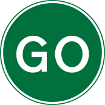

Loading...

Manually operated temporary GO sign
🚫 Regulatory Signs
📖 Description
This temporary sign is used by road workers to manually control traffic flow. When displayed, it instructs drivers to proceed. It is typically used together with a manual STOP sign on the opposite side.